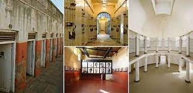
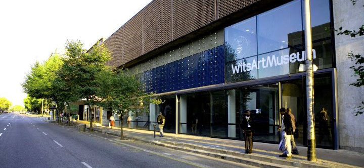

About Me
Moyaha Dipuo
Software development student in training based in Johannesburg,South Africa. Passionate about everything tech. Finds joy in learning coding and everything football.
City of Mbombela, Mpumalanga South Africa

The picture below is of the city of Mbombela, based in the Mpamalanga province of South Africa. Mbombela is known for its rich history of the wildlife and nature adventure activities and attractions. I would love to visit Mobombela mainly to experience the beauty of nature in the Sudwala Caves, and God's Window in the Blyde River Canyon Nature Reserve, a lookout point which provides a panoramic view over the famous Drakensberg Escarpment.
Foreign languages I'm interested in learning
| Mandirin Chinese | Swahili | Spanish |
|---|---|---|
| Hello (nǐ hǎo) 你好 | Hello: jambo/ hujambo/salama. | Hello! ¡Hola! |
| Thank you! (xiè xie) 谢谢 | How are you?: habari gani. | What time is it? ¿Qué hora es? |
| Good Morning (zǎo shang hǎo) 早上好 | Nice to meet you: nafurahi kukuona. | Thank you! ¡Gracias! |
Historical places
Constitution Hill

Constitution Hill is a living museum that tells the story of South Africa’s journey to democracy. The site is a former prison and military fort that bears testament to South Africa’s turbulent past and, today, is home to the country’s Constitutional Court, which endorses the rights of all citizens.
Wits Art Museum

Wits Art Museum is home to an extraordinary collection of 15000 artworks. It includes historical, modern and contemporary African artworks and the Jack Ginsberg Centre for the Book Arts.
Mandela House in Soweto

The Mandela House (The Nelson Mandela National Museum), the former home of Nelson and Winnie Mandela on 8115 Vilakazi Street, Orlando West, Soweto, Johannesburg, South Africa.